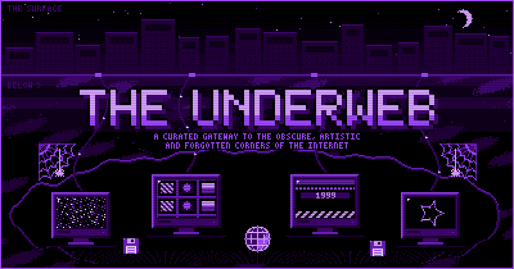

featured.gif — the underweb, cross-section×

the web beyond the feed.
THE UNDERWEB is a curated gateway to the most interesting, obscure, and artistic corners of the internet.
Here you'll find links to digital art galleries, experimental web projects, and forgotten relics of the early internet era.
Our mission is to preserve and celebrate the diversity and creativity of the web beyond mainstream platforms.
recent-transmissions/×
widget.js — take a piece of the underweb home×
link-to-us.txt×
The old web stayed alive because people pointed at each other. Take a button.